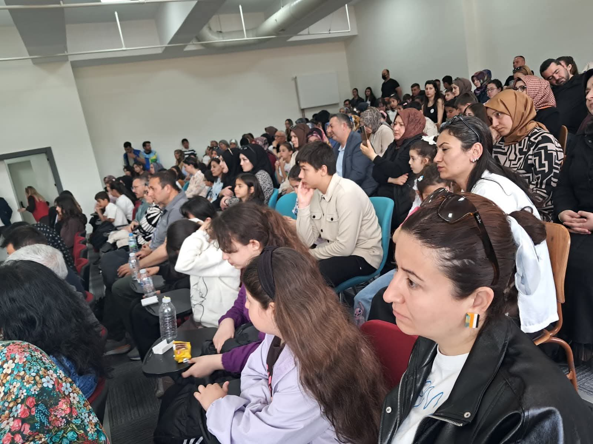
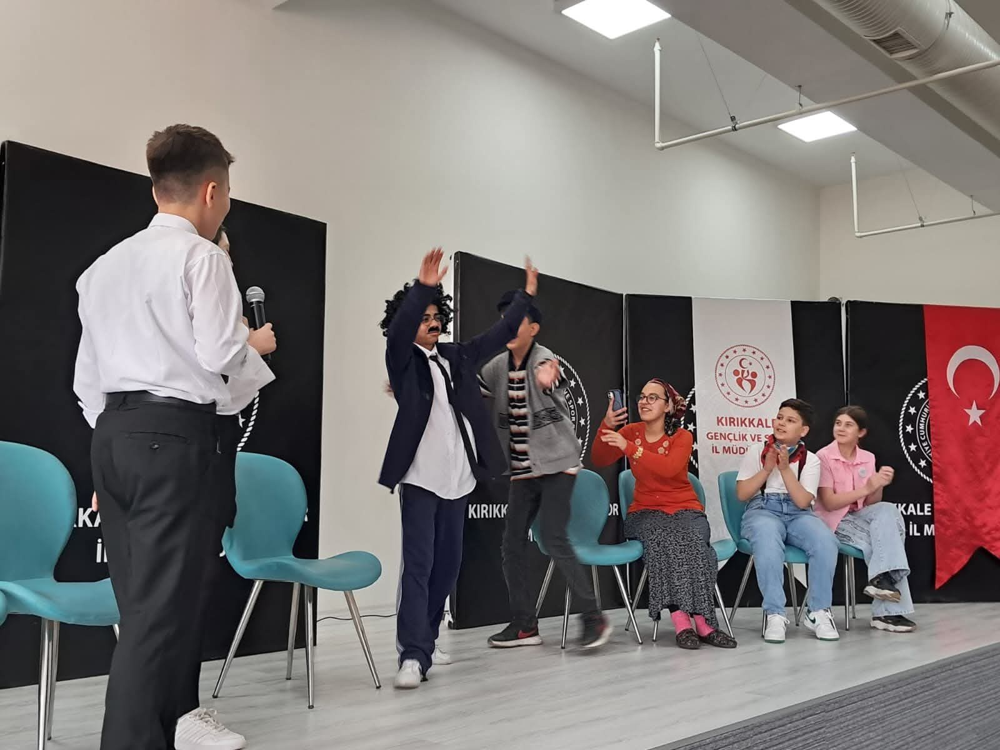
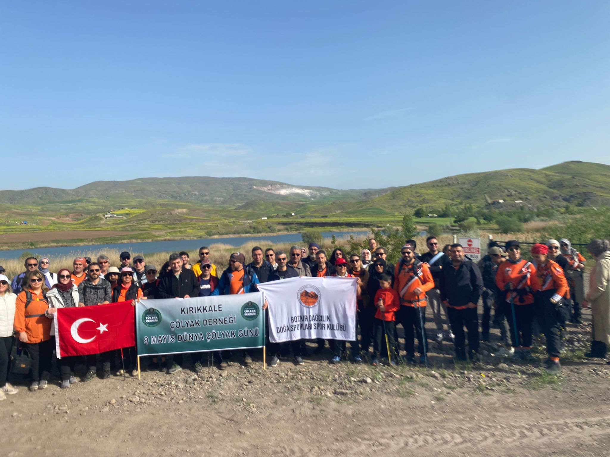

Mayıs ayı, bizim için Çölyak hastalığını hatırlamak, anlamak ve çevremizdeki herkesi bu konuda bilinçlendirmek adına çok özel bir zaman dilimiydi. Özellikle 9-15 Mayıs tarihlerini, "Dünya Çölyak Günü ve Çölyak Farkındalık Haftası" olarak dolu dolu geçirdik.

Kırıkkale'mizde, yeni kurulan Kırıkkale Çölyak Derneği olarak, Kırıkkale Üniversitesi Tıp Fakültesi Çocuk Gastroenteroloji bölümümüzle el ele verdik. Birlikte öyle güzel etkinliklere imza attık ki, Kırıkkale halkıyla üniversitemiz arasında sıcacık bir bağ kurduk. Bu, şehrimiz için bir ilkti ve hepimizi çok mutlu etti.
Çölyak hastalığının şimdilik tek çaresi, ömür boyu sürecek glutensiz bir beslenme şekli. Burada önemli olan şu: Glutensiz beslenme, öyle moda bir diyet değil, Çölyaklılar için hayat memat meselesi. "Azıcık yesem ne olur ki?" düşüncesi, maalesef bağırsaklara zarar vermeye devam ediyor. Bu yüzden, bu diyette sıfır tolerans, yani hiç taviz vermemek çok önemli.
Bu konuda hepimize büyük görevler düşüyor. Restoranların glutensiz menüler hazırlaması, gıda üreticilerinin etiketleri açıkça belirtmesi ve çevremizdeki insanların bu konuda duyarlı olması, Çölyaklı dostlarımızın hayatını çok kolaylaştırıyor. Çünkü glutensiz yaşamak, sadece mutfakta değil, sosyal hayatta da anlayış ve özen gerektiriyor.

Her yıl 9 Mayıs'ta, tüm dünyada Çölyak hastalığına dikkat çekmek ve farkındalık yaratmak için çeşitli etkinlikler düzenleniyor. 9 Mayıs Çölyak Günü ve ardından gelen Farkındalık Haftası, sadece bir hatırlatma değil; milyonlarca insanın yaşam kalitesini doğrudan etkileyen bu sağlık gerçeğini daha görünür kılmak için harika bir fırsat.
Sağlıklı bir toplum olabilmek için, farklı beslenme ihtiyaçlarına saygı duymak ve bu konuda bilinçli olmak hepimizin sorumluluğu.
Bu seneki etkinliklerimizde, Kırıkkale halkını üniversite, okul ve toplum üçgeninde birleştirmeyi ve kaynaştırmayı amaçladık. Etkinliklerimizin ana teması, "Çölyaklılar için Glutensiz Yaşam Bir Tercih Değil, Zorunluluktur" mottosu etrafında şekillendi.
Tıp Fakültemiz Çocuk Gastroenteroloji bölümünün değerli girişimleri ve Kırıkkale Çölyak Derneği Başkanı Sayın Fahri Türkoğlu'nun karşılıksız ve özverili destekleriyle, Yahşihan İlçe Milli Eğitim Müdürlüğü, Kırıkkale İl Gençlik ve Spor Müdürlüğü, Gençlik Kültür Merkezi ve şehrimizin önemli sivil toplum kuruluşlarından Bozkır Dağcılık ve Doğa Sporları Kulübü ile harika ortak etkinlikler düzenledik.

Bu etkinlikler arasında, İlk ve Ortaokullar arası "Çölyak: Bir Tanenin Hikayesi" konulu resim yarışması, minik oyuncuların sahnelediği "Glutensiz Hayatlar" adlı tiyatro oyunu, İl Kapalı Spor Merkezi ve Kırıkkale Üniversitesi Tıp Fakültesi Hastanesi'nde açılan "Çölyak ve Gluten Etkisi" konulu resim sergileri ve Hacıbalı Köyü Kızılırmak kenarında 12 kilometrelik keyifli bir parkurda düzenlenen geniş katılımlı "Çölyak Farkındalık Yürüyüşü" vardı.

Tıp Fakültesi Hastanesi'nde açılan resim sergisi, üniversitemizin "Bestival 2026" programı kapsamında bir hafta boyunca ziyaretçilere açık kaldı. Bu serginin, Çölyak farkındalığının en güzel şekilde anlatılabileceği yerlerden biri olan hastanede yer alması, toplumsal bilinçlenme açısından gerçekten çok değerliydi.